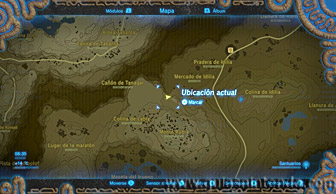
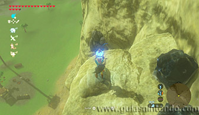
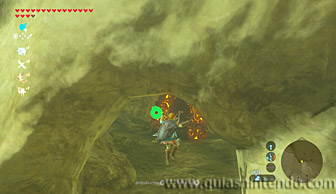
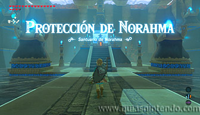
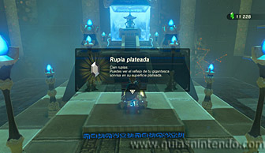

Se encuentra en la región de la torre de las colinas, al norte de la torre. Puedes localizarlo en el interior de una cueva al norte del Monte Rubra. Debes destruir unas rocas con bombas para poder entrar en ella.

Una vez abierta la cueva, planea hasta la entrada.

Una vez dentro, abre el cofre que contiene una rupia plateada y después alcanza el altar para conseguir el símbolo de valía.
